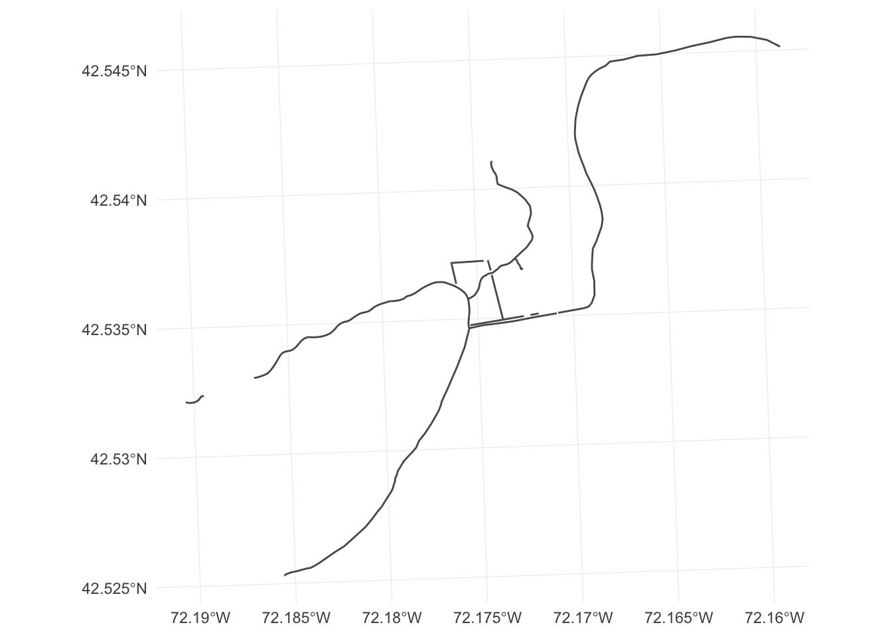
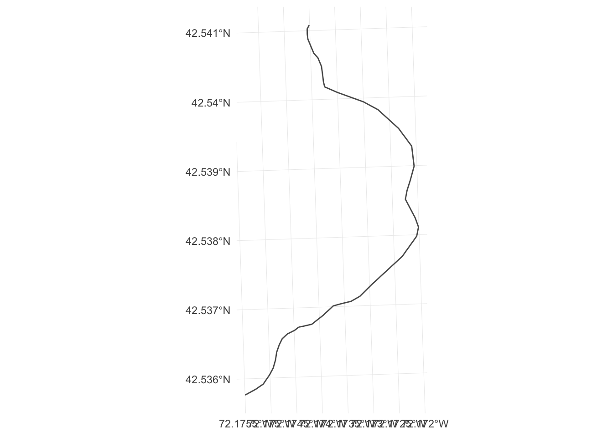
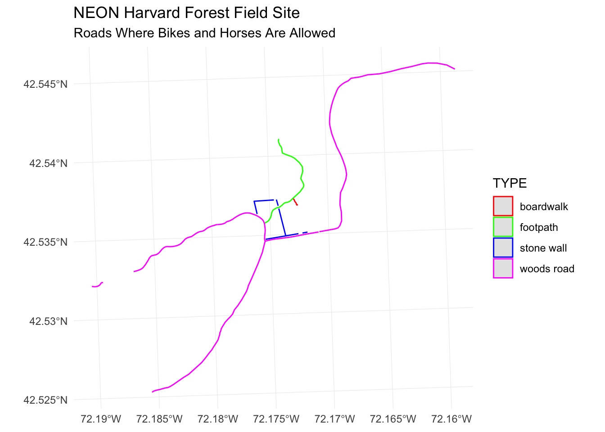
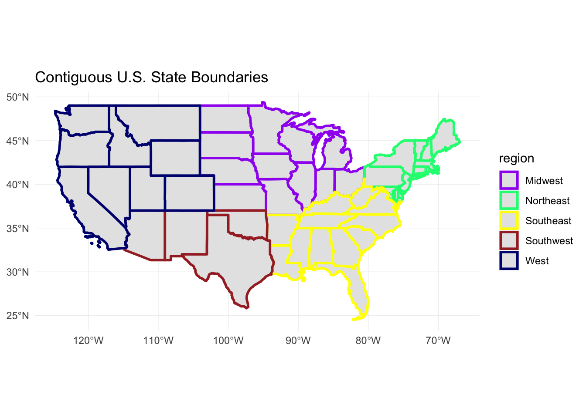

## Linking to GEOS 3.6.1, GDAL 2.1.3, PROJ 4.9.3## Registered S3 methods overwritten by 'ggplot2':
## method from
## [.quosures rlang
## c.quosures rlang
## print.quosures rlang## ── Attaching packages ──────────────────────────────────── tidyverse 1.2.1 ──## ✔ ggplot2 3.1.1 ✔ purrr 0.3.2
## ✔ tibble 2.1.3 ✔ dplyr 0.8.1
## ✔ tidyr 0.8.3 ✔ stringr 1.4.0
## ✔ readr 1.3.1 ✔ forcats 0.4.0## ── Conflicts ─────────────────────────────────────── tidyverse_conflicts() ──
## ✖ dplyr::filter() masks stats::filter()
## ✖ dplyr::lag() masks stats::lag()## Reading layer `HarClip_UTMZ18' from data source `/Users/darya/Dropbox (Sydney Uni)/Training/19_09_11_ResBaz/19_01_11_ResBazGIS/data/NEON-DS-Site-Layout-Files/HARV/HarClip_UTMZ18.shp' using driver `ESRI Shapefile'
## Simple feature collection with 1 feature and 1 field
## geometry type: POLYGON
## dimension: XY
## bbox: xmin: 732128 ymin: 4713209 xmax: 732251.1 ymax: 4713359
## epsg (SRID): 32618
## proj4string: +proj=utm +zone=18 +datum=WGS84 +units=m +no_defs## Reading layer `HARV_roads' from data source `/Users/darya/Dropbox (Sydney Uni)/Training/19_09_11_ResBaz/19_01_11_ResBazGIS/data/NEON-DS-Site-Layout-Files/HARV/HARV_roads.shp' using driver `ESRI Shapefile'
## Simple feature collection with 13 features and 15 fields
## geometry type: MULTILINESTRING
## dimension: XY
## bbox: xmin: 730741.2 ymin: 4711942 xmax: 733295.5 ymax: 4714260
## epsg (SRID): 32618
## proj4string: +proj=utm +zone=18 +datum=WGS84 +units=m +no_defs## Reading layer `HARVtower_UTM18N' from data source `/Users/darya/Dropbox (Sydney Uni)/Training/19_09_11_ResBaz/19_01_11_ResBazGIS/data/NEON-DS-Site-Layout-Files/HARV/HARVtower_UTM18N.shp' using driver `ESRI Shapefile'
## Simple feature collection with 1 feature and 14 fields
## geometry type: POINT
## dimension: XY
## bbox: xmin: 732183.2 ymin: 4713265 xmax: 732183.2 ymax: 4713265
## epsg (SRID): 32618
## proj4string: +proj=utm +zone=18 +datum=WGS84 +units=m +no_defsWe can use the “usual” R ncol and dim functions from R to look at our objects:
dim(lines_HARV)## [1] 13 16lines_HARV %>% head()## Simple feature collection with 6 features and 15 fields
## geometry type: MULTILINESTRING
## dimension: XY
## bbox: xmin: 730741.2 ymin: 4712685 xmax: 732232.3 ymax: 4713726
## epsg (SRID): 32618
## proj4string: +proj=utm +zone=18 +datum=WGS84 +units=m +no_defs
## OBJECTID_1 OBJECTID TYPE NOTES MISCNOTES RULEID
## 1 14 48 woods road Locust Opening Rd <NA> 5
## 2 40 91 footpath <NA> <NA> 6
## 3 41 106 footpath <NA> <NA> 6
## 4 211 279 stone wall <NA> <NA> 1
## 5 212 280 stone wall <NA> <NA> 1
## 6 213 281 stone wall <NA> <NA> 1
## MAPLABEL SHAPE_LENG LABEL BIKEHORSE RESVEHICLE
## 1 Locust Opening Rd 1297.35706 Locust Opening Rd Y R1
## 2 <NA> 146.29984 <NA> Y R1
## 3 <NA> 676.71804 <NA> Y R2
## 4 <NA> 231.78957 <NA> <NA> <NA>
## 5 <NA> 45.50864 <NA> <NA> <NA>
## 6 <NA> 198.39043 <NA> <NA> <NA>
## RECMAP Shape_Le_1 ResVehic_1
## 1 Y 1297.10617 R1 - All Research Vehicles Allowed
## 2 Y 146.29983 R1 - All Research Vehicles Allowed
## 3 Y 676.71807 R2 - 4WD/High Clearance Vehicles Only
## 4 <NA> 231.78962 <NA>
## 5 <NA> 45.50859 <NA>
## 6 <NA> 198.39041 <NA>
## BicyclesHo geometry
## 1 Bicycles and Horses Allowed MULTILINESTRING ((730819.2 ...
## 2 Bicycles and Horses Allowed MULTILINESTRING ((732040.2 ...
## 3 Bicycles and Horses Allowed MULTILINESTRING ((732057 47...
## 4 <NA> MULTILINESTRING ((731903.6 ...
## 5 <NA> MULTILINESTRING ((732039.1 ...
## 6 <NA> MULTILINESTRING ((732056.2 ...ncol(point_HARV)## [1] 15# Explore the attributes associated with the point_HARV and aoi_boundary_HARV spatial objects.
#
# How many attributes does each have?
# Who owns the site in the point_HARV data object?
#
# Which of the following is NOT an attribute of the point_HARV data object?
#
# A) Latitude
# B) County
# C) Country
# Because this is R, we can use standard R operations to access specific columns of the sf dataframe:
lines_HARV$TYPE## [1] woods road footpath footpath stone wall stone wall stone wall
## [7] stone wall stone wall stone wall boardwalk woods road woods road
## [13] woods road
## Levels: boardwalk footpath stone wall woods roadlevels(lines_HARV$TYPE)## [1] "boardwalk" "footpath" "stone wall" "woods road"Furthermore, we can use dplyr commands to work with our object just like a dataframe - because that’s what it is:
class(lines_HARV)## [1] "sf" "data.frame"Let’s plot only the footpaths:
lines_HARV %>% ggplot() + geom_sf() 
lines_HARV %>%
filter(TYPE == "footpath") %>%
ggplot() + geom_sf() 
Now let’s plot all of the different road types, colouring them in by type:
# First, how many road types are there?
levels(lines_HARV$TYPE)## [1] "boardwalk" "footpath" "stone wall" "woods road"# let's build up the ggplot
lines_HARV %>%
ggplot() +
geom_sf(aes(col = TYPE)) +
scale_color_manual(values = c("red", "green", "blue", "magenta")) +
ggtitle("NEON Harvard Forest Field Site", subtitle = "Roads Where Bikes and Horses Are Allowed") +
coord_sf()
# Create a map of the state boundaries in the United States using the data located in your downloaded data folder: # NEON-DS-Site-Layout-Files/US-Boundary-Layers\US-State-Boundaries-Census-2014.
# Apply a fill color to each state using its region value. Add a legend.
state_boundary_US <-
st_read("data/NEON-DS-Site-Layout-Files/US-Boundary-Layers/US-State-Boundaries-Census-2014.shp")## Reading layer `US-State-Boundaries-Census-2014' from data source `/Users/darya/Dropbox (Sydney Uni)/Training/19_09_11_ResBaz/19_01_11_ResBazGIS/data/NEON-DS-Site-Layout-Files/US-Boundary-Layers/US-State-Boundaries-Census-2014.shp' using driver `ESRI Shapefile'
## Simple feature collection with 58 features and 10 fields
## geometry type: MULTIPOLYGON
## dimension: XYZ
## bbox: xmin: -124.7258 ymin: 24.49813 xmax: -66.9499 ymax: 49.38436
## epsg (SRID): 4326
## proj4string: +proj=longlat +datum=WGS84 +no_defslevels(state_boundary_US$region)## [1] "Midwest" "Northeast" "Southeast" "Southwest" "West"colors <- c("purple", "springgreen", "yellow", "brown", "navy")
ggplot() +
geom_sf(data = state_boundary_US, aes(color = region), size = 1) +
scale_color_manual(values = colors) +
ggtitle("Contiguous U.S. State Boundaries") +
coord_sf()